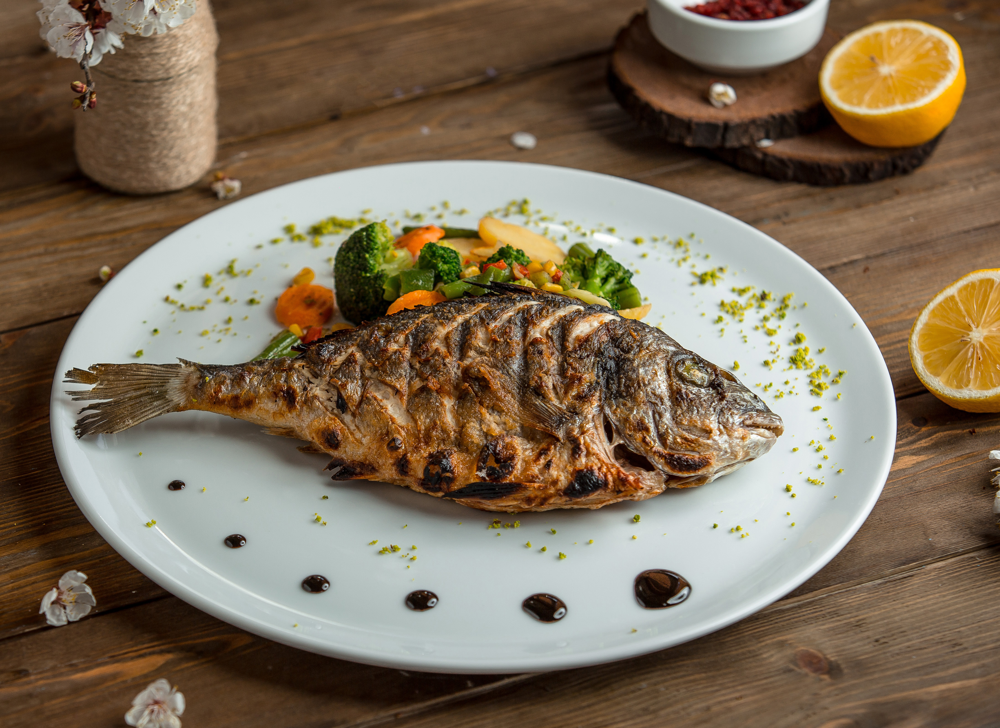
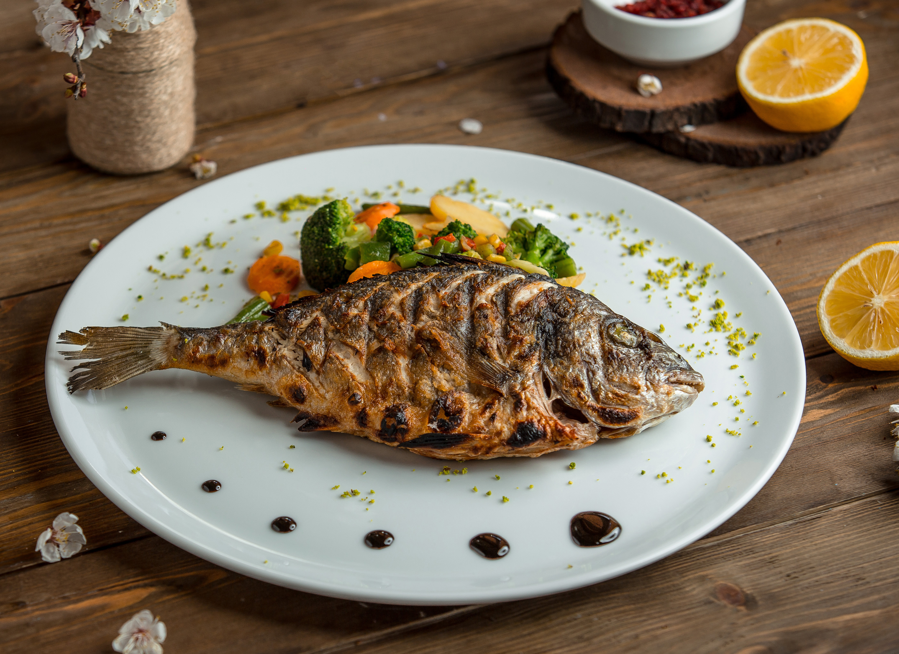
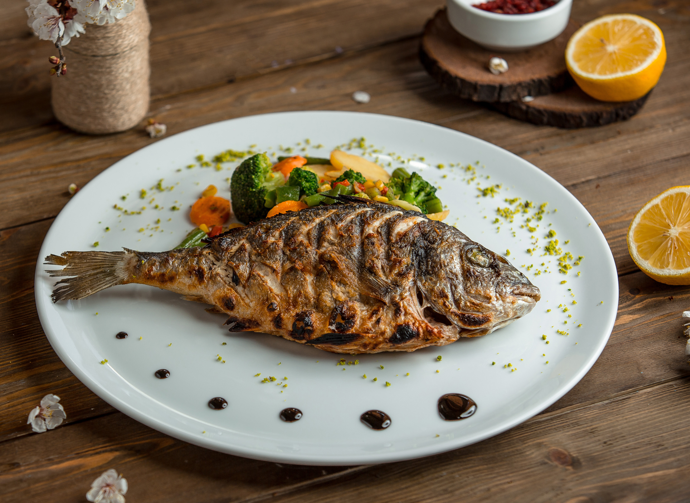
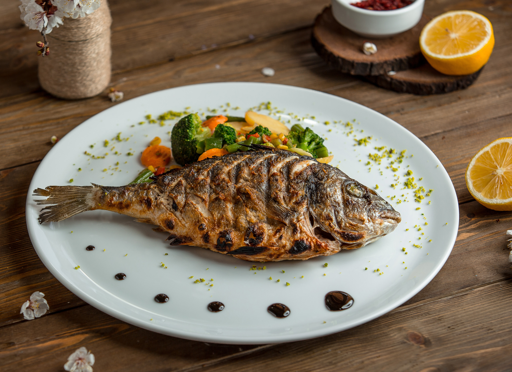

 

Nuestro proposito es ofrecer a nuestros clientes un producto de pescado sano y sabroso. Construir una buena relación constituye la base desde la cual operamos, para nuestro personal, pero también para nuestros clientes y proveedores. También creemos que es importante para la organización contribuir a iniciativas sostenibles y socialmente involucradas. Para garantizar una buena administración de nuestra naturaleza y el medio ambiente de esta manera. Intentamos lograr esto comercializando el pescado y los productos pesqueros que han sido capturados o criados de forma sostenible y que han sido procesados, envasados, almacenados y distribuidos con el mayor cuidado y en condiciones de higiene perfecta. Con este fin, Pesca Ecologic La Redc, trabaja exclusivamente con socios confiables en pesquerías y en la industria pesquera de todo el mundo.
En Pesca Ecologica La Red La satisfacción de nuestros clientes es lo más importante para nosotros; por eso es que a lo largo de estos años nos hemos superado y mejorado en la implementación de tecnología para la preparación de nuestros platos. Esto nos ha servido para contar con la confianza de todos aquellos que han degustado de nuestro menú.